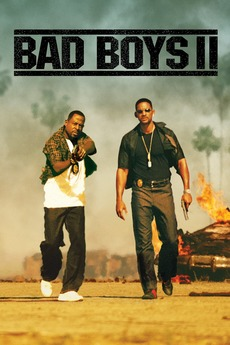
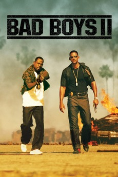
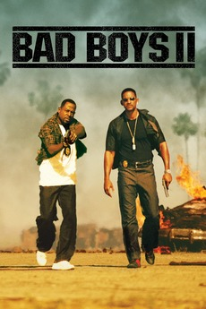

Wisecracking mercenary Deadpool meets Russell, an angry teenage mutant who lives at an orphanage. When Russell becomes the target of Cable -- a genetically enhanced soldier from the future -- Deadpool realizes that he'll need some help saving the boy from such a superior enemy. He soon joins forces with Bedlam, Shatterstar, Domino and other powerful mutants to protect young Russell from Cable and his advanced weaponry. After fighting organized crime as the wisecracking mercenary Deadpool for two years, Wade Wilson fails to kill one of his targets on his anniversary with his girlfriend Vanessa. That night, after the pair decides to start a family together, the target tracks Wade down and inadvertently kills Vanessa. Wade kills all but one of the men in revenge, before pulling them both into the path of an oncoming truck. Blaming himself for Vanessa's death, he attempts to die by suicide six weeks later by blowing himself up. Wade has a vision of Vanessa in the afterlife, but remains alive due to his healing abilities and his body is put back together by Colossus. Wade is left with only a Skee-Ball token, an anniversary gift, as a final memento of Vanessa.
When a string of brutal murders terrorizes London, it doesn't take long for legendary detective Sherlock Holmes (Robert Downey Jr.) and his crime-solving partner, Dr. Watson (Jude Law), to find the killer, Lord Blackwood (Mark Strong). A devotee of the dark arts, Blackwood has a bigger scheme in mind, and his execution plays right into his plans. The game is afoot when Blackwood seems to rise from the grave, plunging Holmes and Watson into the world of the occult and strange technologies. In 1890 London, private detective Sherlock Holmes and his partner Dr. John Watson prevent the ritualistic murder of a woman by Lord Henry Blackwood, who has killed five other young women in a similar manner. Inspector Lestrade and the police arrest Blackwood. Three months later, Watson is engaged to Mary Morstan and moving out of 221B Baker Street; while he enjoys their adventures together, Watson looks forward to not having to deal with Holmes' eccentricities. Meanwhile, Blackwood, who claims to have supernatural powers, has been sentenced to death and requests to see Holmes, warning him of three more unstoppable deaths that will cause great changes to the world. Blackwood is subsequently hanged.
The drug ecstasy is flowing into Miami, and the police want it stopped. Police Detective Marcus Burnett (Martin Lawrence) and his partner, Mike Lowrey (Will Smith), are just the men to do it. They track the drugs to a Cuban smuggler, Johnny Tapia (Jordi Mollà), who is also involved in a bloody war with Russian and Haitian mobsters. If that isn't bad enough, there's tension between the two cops because Lowrey is romantically involved with Burnett's sister, Syd (Gabrielle Union). On crime lord Antonio Pope's boat, hacker A.J. is reviewing a list on the computer. Pope calls Port Commissioner Griffin, accusing him of stealing, which Griffin denies. Pope orders the hitmen to eliminate him, then he tasks him to find who took his money. Two years after the first movie, James is with partner Detective Mayfield, busting drug dealer Troy. He pulls a gun on James so Ben watching this over the camera, comes to help. He threatens Troy by acting tough, only to blow his cover. A shootout leads to Mayfield getting shot and Troy escaping. James and Ben chase him, and Ben nearly gets himself run over. James follows Troy through a parking garage, capturing him, and finding a necklace/flash drive on him.
Bullied as a teen for being overweight, Bob Stone (Dwayne Johnson) shows up to his high school reunion looking fit and muscular. While there, he finds Calvin Joyner (Kevin Hart), a fast-talking accountant who misses his glory days as a popular athlete. Stone is now a lethal CIA agent who needs Calvin's number skills to help him save the compromised U.S. spy satellite system. Together, the former classmates encounter shootouts, espionage and double-crosses while trying to prevent worldwide chaos. In 1996, star athlete Calvin "The Golden Jet" Joyner is being honored at his high school. Halfway through Calvin's speech, a group of bullies led by Trevor Olson throws the nude morbidly obese nerd Robbie Weirdicht into the gymnasium where the School assembly is taking place. Everyone starts laughing except for Joyner and his girlfriend, Maggie Johnson, who are the only ones sympathetic towards Weirdicht; the former going as far as to quickly cover Weirdicht with his varsity jacket in a moment of compassion. Weirdicht thanks Calvin and flees in embarrassment.The film premiered in Los Angeles on June 10, 2016, and was theatrically released in the United States on June 17, 2016.
The drug ecstasy is flowing into Miami, and the police want it stopped. Police Detective Marcus Burnett (Martin Lawrence) and his partner, Mike Lowrey (Will Smith), are just the men to do it. They track the drugs to a Cuban smuggler, Johnny Tapia (Jordi Mollà), who is also involved in a bloody war with Russian and Haitian mobsters. If that isn't bad enough, there's tension between the two cops because Lowrey is romantically involved with Burnett's sister, Syd (Gabrielle Union). Eight years after the events of the first film, Mike (Smith) and Marcus (Lawrence) are investigating the flow of ecstasy into Miami. They infiltrate a Klan meeting held in the marshland outside of Miami only to discover that they are, in fact, buyers and not distributors of the ecstasy. After a radio mishap leads to a delayed arrival of Miami Police’s Tactical Narcotics Team (TNT), Mike and Marcus end up in a shootout with the Klansmen that results in many casualties and injuries, with Marcus accidentally sustaining a gunshot wound to the buttocks from Mike. Ride Along 2 is a 2016 American buddy cop action comedy film directed by Tim Story and written by Phil Hay and Matt Manfredi.